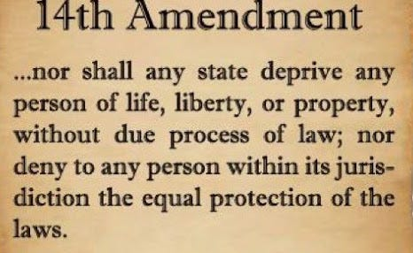

14th Amendment
Loren Lemarr
Introduction
The 14th amendment was passed by the Senate on June 8, 1866, and ratified two years later, on July 9, 1868. As this was passed in the senate just a year after the 13th amendment was ratified, the focus was largely to allow previous slaves to better integrate into society. It granted the ex-slaves citizenship by making it so that anyone born in the United States is a U.S. citizen. It then tried to guarantee the rights of those ex-slaves through the equal protection clause and through due process.
section 1: Equal Protection and Citizenship
Citizenship
This section defines who is a citizen and the intricacies surrounding citizenship such as how one can lose their citizenship, the privileges and immunities of citizens, or how someone can become a citizen. This section makes it so a child born on U.S. territory from two non-citizen parents is a U.S. citizen and has all the rights that any other U.S. citizen would receive.
Equal Protection
The largest part of the 14th amendment is “equal protection under the laws”. This was created to prevent the creation of discriminatory laws as well as preventing people with government positions from using their powers to discriminate (i.e. biased judges). But equal protection under the law has been used in a wide variety of discrimination cases and set up the foundation for the increase in equality we have today.
Due Process Clause
The 14th amendment states that no person shall be deprived of life, liberty, or property without due process of law. The main idea these words have is that all levels of American government must operate within the law and provide fair procedures. This statement, while simple, has had a large impact on the legal world. One way it has done this is by making states affected by the bill of rights through a process called incorporation. Due process also protects rights not specifically stated by operating on the principle that the 5th and 14th amendments protect fundamental rights from government interference.
section 2: Apportionment of Representation
This section details the allocation of seats based on population. It was created in part due to the 3/5ths compromise. It also makes it so that anyone over the age of 21 that has had their right to vote denied does not count towards the population that determines the seat numbers. No serious effort was ever made in Congress to effectuate Section 2, and the only judicial attempt was rebuffed.
section 3: Disqualification from Holding Office
This section prevents anyone that has engaged in insurrection, rebellion, or aided an enemy of the United States from holding office. But Congress can pass a vote of two-thirds of each House, to remove such restrictions on a person.
section 4: Public Debt
The U.S. is allowed to go into debt and pay back any debt that they have. Neither the United States nor any state will pay any debt created to aid the confederacy or any other rebellious party. The U.S. will also not pay anyone with the claim for the loss or emancipation of any slave.
section 5: Enforcement
This section gives congress the power to enforce the 14th amendment. Congress has the discretion to adopt remedial measures, such as authorizing persons being denied their civil rights in state courts to remove their cases to federal courts, and to provide criminal and civil liability for state officials and agents or persons associated with them who violate protected rights.
 |